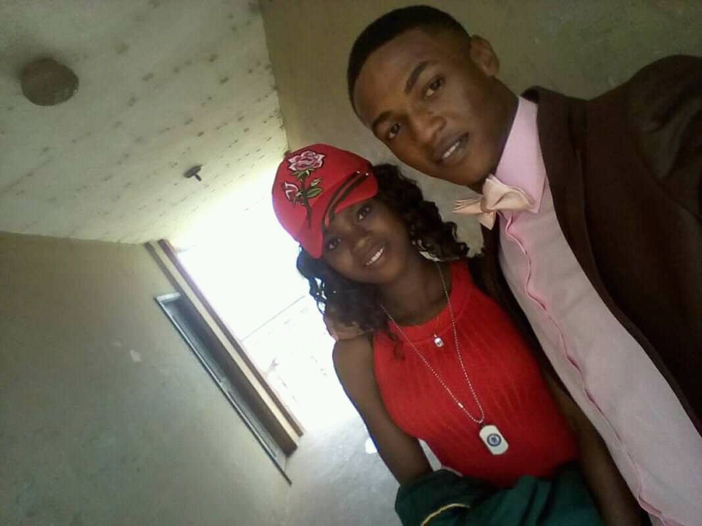

Restrospect
On the 3rd of October 2017, i graduated from Edo college. I can still remember that day
like it was yesterday and like many of my collegues would, i believe i hold that day special
on many accounts. Need i say i just finally concluded Secondary School; i was a recipient to
quite a number of awards; My family and friends were present and of course Promise was there.
I can still remember how it all played out, although in fragments now. The Human memory has a
funny way of recollecting events, especially old events. That's why i try as much as possible
to document special moments worth recalling upto the minute and simplest details. Trust me they
help paint a more accurate picture even as you reflect on them. So where was i in my story? ahhh
yes! Promise came to my graduation. As it was the custom then, graduants were meant to march into
the hall at the opening ceremony. The atmosphere was humid, with clear skies. I remember dressing
up that morning. I was feeling weird didn't know what to expect and yet i expected alot from that
day. I remember entering the school premises in my aunt's car, with my parents. So we were told to
go get our graduation gowns and queue up in front of the hall. All this while i was expecting to
see her. I was just about to take the left turn into the hall when i saw her coming from my right
i was so excited to see her, i can almost compare the feeling to that of a groom at the site of his
bride walking down the aisle (laughing out loud). She wore majorly red, and for me i knew whatever
happens inside the hall wouldn't really matter, the fact she was there made my day complete.
It's been two years, a month, some few days.

Throwback pictures
Before
After